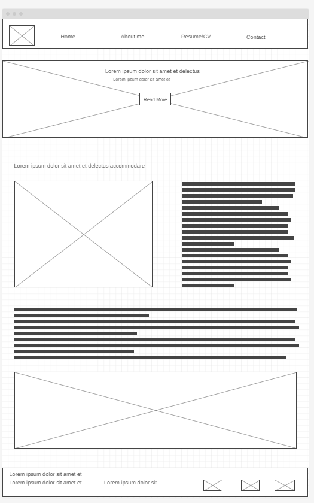
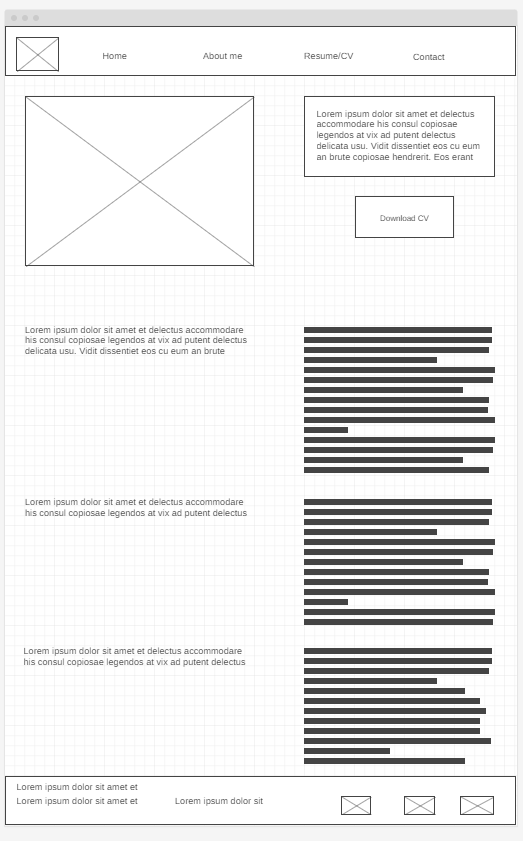

Overview
Purpose
The purpose of the proposed personal portfolio website is to showcase my skills, experience, and achievements to potential and future employers. It will work as a broad platform to highlight my professional work, projects undertaken, and accomplishments, providing a visually appealing and easily accessible representation of my capabilities.
Audience
The intended audience for this personal portfolio website includes future employers, hiring managers, recruiters, and anyone interested in assessing the individual's professional profile targeting both small-scale startups and established organizations seeking talented individuals.
Branding
Website Logo
Style Guide
Color Palette
Palette URL: https://coolors.co/palette/22223b-4a4e69-9a8c98-c9ada7| Primary | Secondary | Accent 1 | Accent 2 |
|---|---|---|---|
| [#22223b] | [#4a4e69] | [#9a8c98] | [#c9ada7] |
Typography
Heading Font: Playfair Display
Paragraph Font: Noto Serif
About
The Francina Shanana Personal Profile website is designed to provide a comprehensive overview of Francina Shanana’s professional background, skills, achievements, and aspirations. The website aims to serve as a platform for potential employers, hirers, and audiences to gain insight into Francina Shanana’s qualifications, experiences, and career objectives. By offering a well-structured and informative platform, the website seeks to address the expectations of visitors by providing relevant content that showcases Francina Shanana’s expertise and capabilities. Visitors are likely to come to the Francina Shanana Personal Profile website with the intention of learning more about Francina Shanana’s professional profile. This includes potential employers seeking to evaluate her suitability for specific roles, hirers looking for talented individuals to collaborate with, and audiences interested in gaining knowledge about her expertise in a particular field. The website serves as a centralized source of information that allows visitors to understand Francina Shanana’s background, skills, and accomplishments in a convenient and accessible manner. Visitors to the website will expect to find answers to various questions related to Francina Shanana’s professional journey. These may include inquiries about her educational qualifications, work experience, areas of expertise, notable achievements, career objectives, and any specific projects or initiatives she has been involved in. Additionally, visitors may seek information about her skill set, strengths, professional affiliations, and contributions to relevant industries or communities. Visitors may want to engage in activities such as reviewing Francina Shanana’s resume or curriculum vitae, exploring her portfolio of work or projects, accessing testimonials or recommendations from previous colleagues or clients, and potentially reaching out for collaboration opportunities or employment inquiries. The website should facilitate these activities by providing clear navigation and access points for relevant content. To facilitate the activities mentioned above, the website should include essential information such as Francina Shanana’s detailed resume or CV highlighting her academic background, professional experience, certifications, and training. It should also feature a comprehensive portfolio showcasing her work samples, projects she has contributed to or led, as well as any publications or presentations she has been involved in. Testimonials from colleagues or clients endorsing her skills and work ethic would further enhance the credibility of the information presented.
Why it is necessary
To facilitate the activities mentioned above, the website should include essential information such as Francina Shanana’s detailed resume or CV highlighting her academic background, professional experience, certifications, and training. It should also feature a comprehensive portfolio showcasing her work samples, projects she has contributed to or led, as well as any publications or presentations she has been involved in. Testimonials from colleagues or clients endorsing her skills and work ethic would further enhance the credibility of the information presented.Visitors are likely to choose the Francina Shanana Personal Profile website over other sources due to its tailored focus on presenting a holistic view of Francina Shanana’s professional profile. The website aims to offer an intuitive user experience with well-organized content that is easy to navigate. Additionally, by providing comprehensive and up-to-date information about Francina Shanana’s qualifications and achievements in one centralized location, the website becomes a convenient and reliable resource for individuals seeking insights into her professional background. In conclusion, the Francina Shanana Personal Profile website serves as an essential platform for individuals interested in gaining a thorough understanding of Francina Shanana’s professional capabilities. By addressing the expectations of potential employers, hirers, and audiences through well-structured content and relevant information, the website aims to provide a compelling overview of Francina Shanana’s expertise and accomplishments.
Navigation
Site Map
Content
Home page
Welcome to the personal profile website of Francina Shanana, a highly experienced and skilled finance officer. This website is designed to cater to the needs of companies hiring, employers, and finance managers who are seeking a reliable and proficient finance officer for their organizations. By providing comprehensive information and addressing the key concerns of our target audience, this website aims to establish Francina Shanana as a trusted professional in the field of finance. People will come to this site for various reasons. Firstly, companies looking to hire a finance officer will visit this website to gain insights into Francina Shanana’s qualifications, expertise, and experience. They will be interested in understanding how her skills align with their organization’s financial goals and requirements. Secondly, employers seeking guidance on financial matters or looking for advice on managing their finances effectively may also visit this site. Lastly, finance managers who are looking for industry best practices, tips, and resources can find valuable information here. The website will provide detailed information about Francina Shanana’s professional background, including her education, certifications, work experience, and notable achievements. It will highlight her expertise in areas such as financial analysis, budgeting, forecasting, risk management, and compliance. In addition to answering these questions, visitors will also want to complete certain activities on the website. These activities may include: 1. Contact Francina Shanana for potential job opportunities or consulting services. 2. Request additional information about his qualifications or expertise.
Images for the Home page

About Me page
As a seasoned finance officer with over a decade of experience in the financial industry, I bring a wealth of knowledge and expertise to the table. My extensive background includes working with EWF, where I have honed my skills in financial planning, budgeting, forecasting, and risk management. I am well-versed in financial regulations and compliance and have a proven track record of delivering strong financial performance and driving business growth. My core competencies include financial analysis, financial modelling, budgeting, forecasting, and financial reporting. I am highly proficient in financial software such as Excel, Access, and financial planning tools. I have a deep understanding of risk management strategies, and I am well-equipped to provide expert advice on these topics. Throughout my career, I have consistently demonstrated my ability to deliver high-quality financial results, build strong relationships with stakeholders, and provide expert advice on financial matters. My dedication to my work, combined with my exceptional communication skills and attention to detail, have earned me a reputation as a trusted and reliable finance professional.
Images for the About Me Page


Resume/CV page
My website page for my resume/CV as a finance officer is designed to provide the audience with a comprehensive overview of my skills, experience, and qualifications in the finance field. By including sections on educational background, professional experience, relevant skills, notable achievements, and contact information, I aim to present myself as a highly competent and valuable candidate for finance-related roles. The content on my website page is designed to showcase my expertise and highlight the value I can bring to an organization. The first section of my personal profile website page focuses on providing a brief introduction about myself. This includes my name, professional title as a finance officer, and a concise summary of my career objectives and aspirations. This introduction serves as an attention-grabbing opening that immediately informs employers about my background and goals. The next section of my website page delves into my educational background. Here, I provide details about my academic achievements, including the degrees I have obtained and the institutions I have attended. I also highlight any relevant certifications or professional qualifications that demonstrate my commitment to continuous learning and development in the finance field.
Images for the Resume/CV Page
Wireframes
Create three wireframes for your site. One for each page and list them here
Home
[Any additional details about home that the wireframe does not make clear]
About Me
[Any additional details about page 2 that the wireframe does not make clear]

Resume/CV
[Any additional details about page 3 that the wireframe does not make clear]
